Physical computing · Machine learning · Arduino
Takata AI Sorter Bin
A bin that uses machine learning to sort trash from recyclables
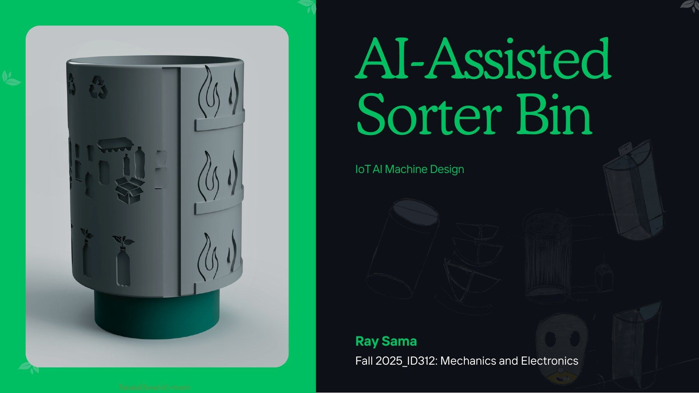
The problem
Sorting waste correctly takes effort, and people get it wrong. Takata (Swahili for “trash”) takes that decision off the user: drop something in and the bin decides where it goes.
My role
I designed the mechanism, trained the classifier, wired and programmed the electronics, and fabricated the bin.
Process
Teach a model the difference
I trained an image classifier on two simple categories, using a plastic bottle for recyclables and a chip bag for trash. Then I refined the classes over several rounds to improve accuracy.
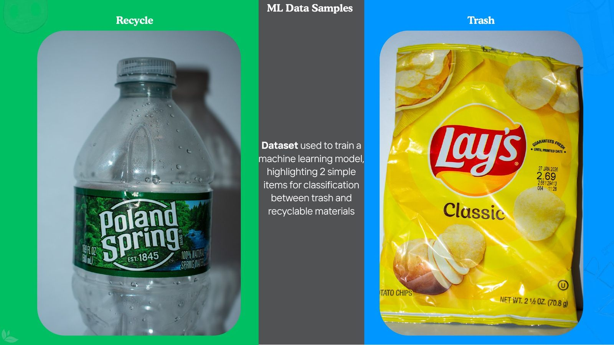
Training samples: recycle vs. trash 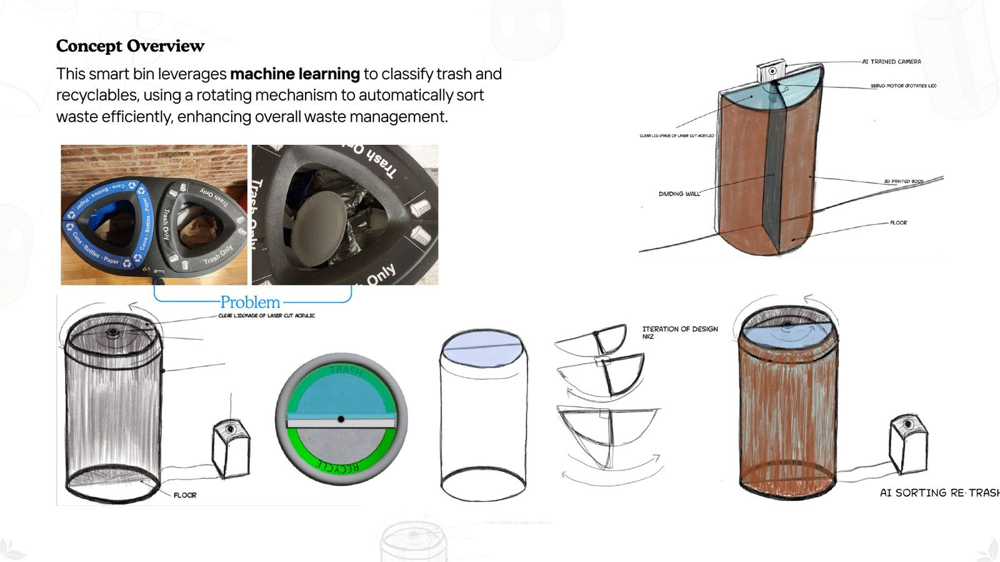
Concept overview Turn a prediction into motion
The classifier’s output is sent to the Arduino, which rotates a servo to one angle for trash and another for recyclables. Reaching a reliable “180°” on the motor took multiple trials.
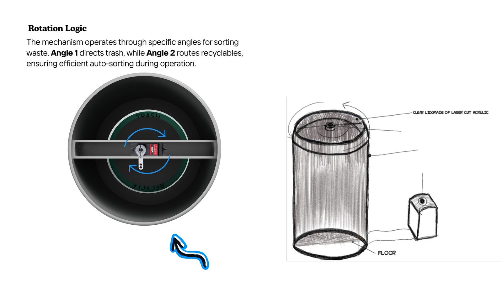
Rotation logic 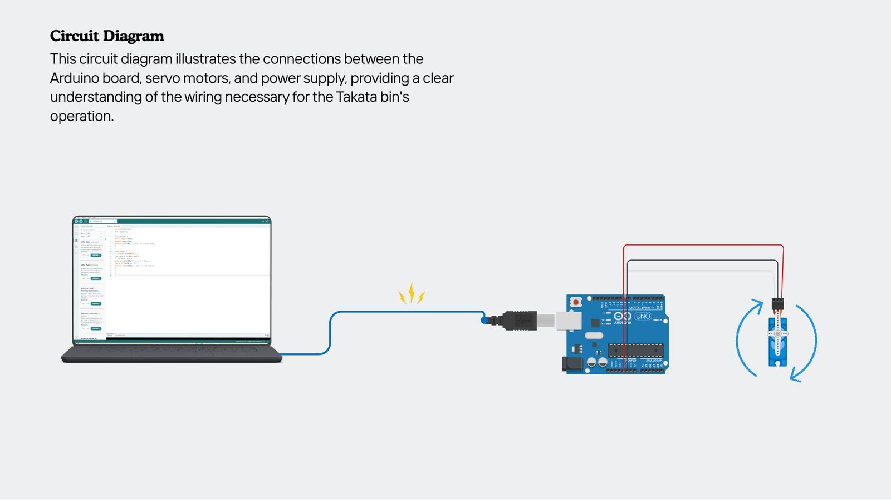
Circuit diagram 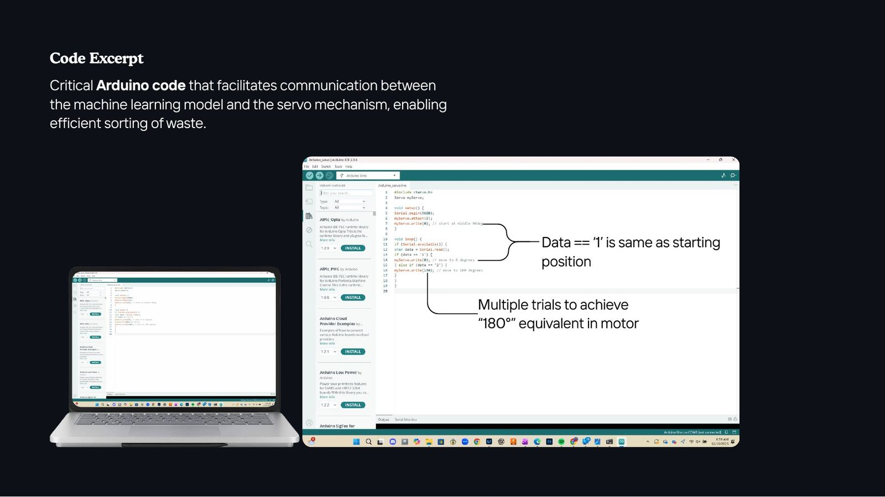
Arduino code excerpt Build it so it survives people
A servo mount and bearing system keep the rotation smooth. The Arduino sits at the bottom, away from users, and the inner compartments include a rotation track and a lid mechanism.
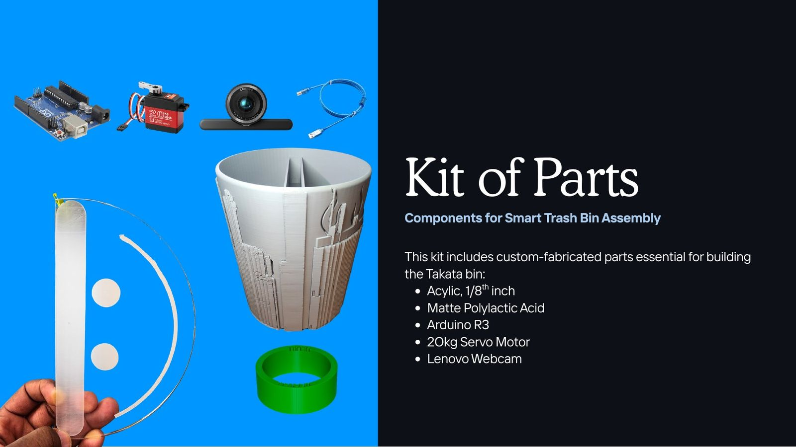
Kit of parts 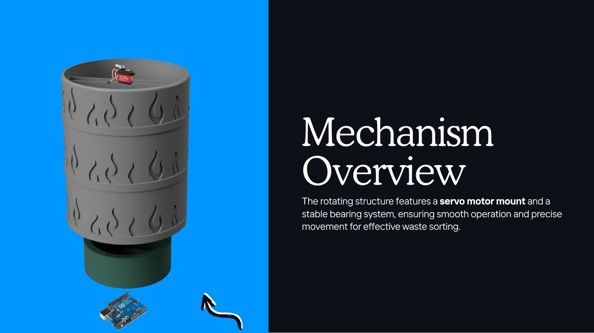
Mechanism overview 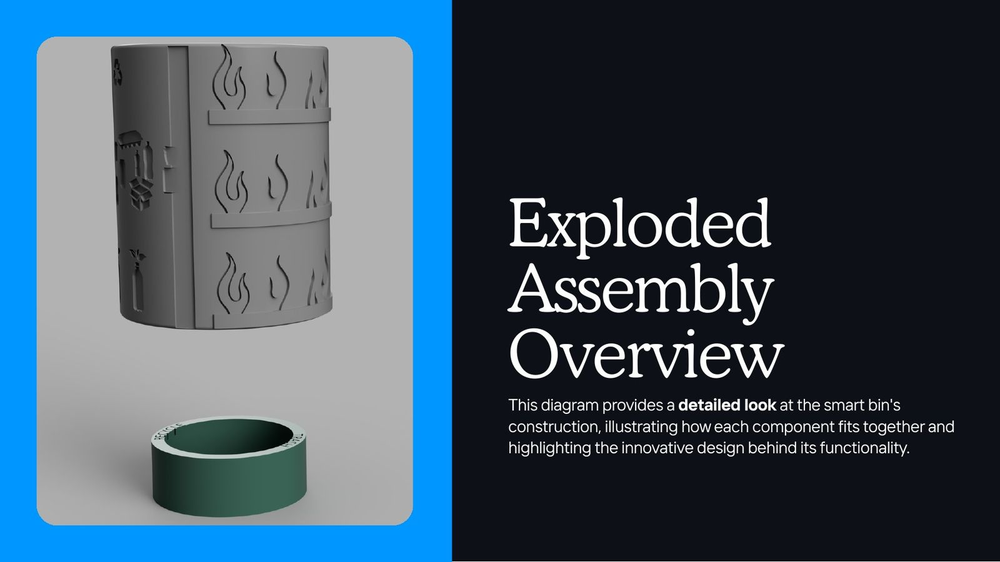
Exploded assembly
Outcome
The final bin is fully operational. Functionality tests showed classification accuracy improving significantly through iteration, and the lid interaction is smooth.
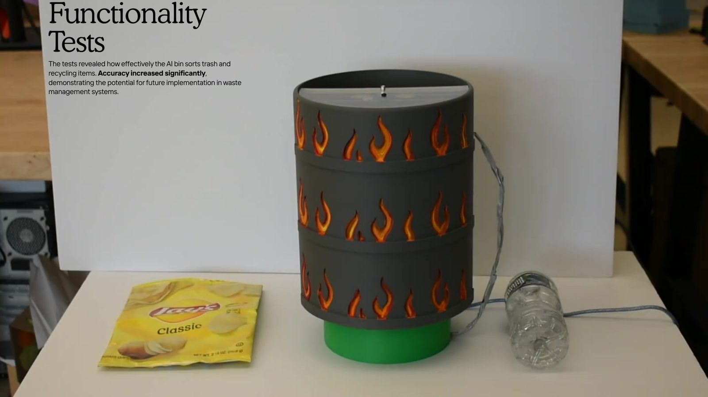
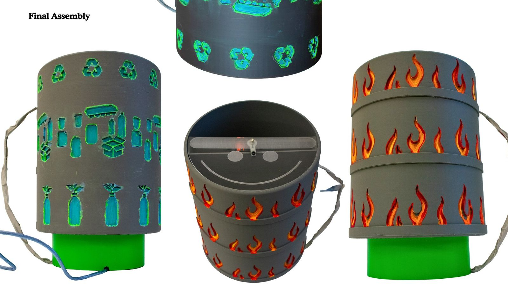